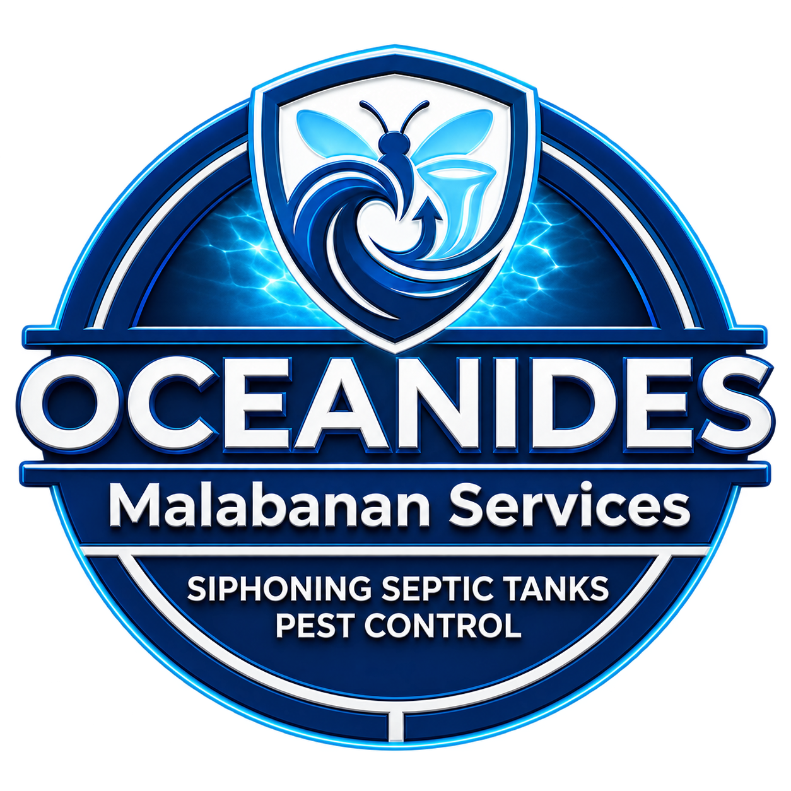

A better-informed wastewater decision
Malaki ba ang regular na gastos ng facility mo sa paghakot ng wastewater?
An original, editable 3D recreation of the supplier-reference equipment, with Oceanides branding, approved Aira Taglish narration and animated process cutaways.

How particles are collected, separated and filtered; where advanced treatment fits; why laboratory testing and ongoing care remain necessary.
A site assessment and technical review, followed by an installation and operating-cost comparison based on actual site data.
Reconstruction scope: visible equipment arrangement and proportions were recreated from the rotating supplier reference. Hidden connections and exact dimensions remain unverified. Cutaways explain the process and are not fabrication drawings. Final site configuration and performance require technical validation.
228 words / 1,509 scene characters. The approved take succeeded after the user confirmed the billing issue was resolved. Speech timing controls the scene boundaries; only verified boundary silence was removed.
Malaki ba ang regular na gastos ng facility mo sa paghakot ng wastewater?
Sa on-site treatment, ginagamot ang wastewater sa mismong site, bago ito ilabas sa tamang discharge point. Ganito ang flow ng system na ipinapakita.
Una, dinadala ng pump ang wastewater sa electrocoagulation stage. Gumagamit ito ng electrical current at metal electrodes para magsama-sama ang maliliit na particles, na mas madaling ma-separate sa tubig. Kasama rin sa supplier plan ang chemical dosing.
Sunod ang settling. Dito, hinihiwalay ang naipong solids. Ang nakolektang sludge, kailangan pa ring alisin at maayos na i-dispose.
Pagkatapos, dumadaan ang tubig sa filtration stages para masala ang natitirang particles.
Sa advanced oxidation stage, gumagamit ng UV at ozone ayon sa supplier design, para sa dagdag na treatment at disinfection.
Pero hindi sapat na mukhang malinaw ang tubig. Laboratory testing ang basehan kung pasado ito sa discharge requirements ng site.
Ano ang possible benefit? Kung bagay ang system sa site mo, puwedeng mabawasan ang wastewater na kailangang ihakot. Pero hindi automatic na mawawala ang siphoning. May maintenance, power, consumables at sludge removal pa rin.
Kaya bago mag-recommend ng system, i-check muna ang actual flow, lab results, available space at current operating costs.
Oceanides ang main contact mo para i-coordinate ang site assessment at technical review. Magpa-assess muna. I-compare ang installation at operating costs sa current setup mo, para may malinaw na basehan bago mag-decide.
The supplier video was used as a visual reference only. This film contains no supplier footage, source pixels or BioGreen watermarks. Process reference: BioGreen operation video and the supplier's 30 CMD reference plan. The filter type remains generic because the source materials mix membrane and glass-media terminology. Chemical dosing and residual sludge are acknowledged; no fixed saving, zero-siphoning or automatic compliance claim is made.
Mechanism references: USGS electrocoagulation research; EPA filtration guidance; EPA wastewater disinfection guidance.